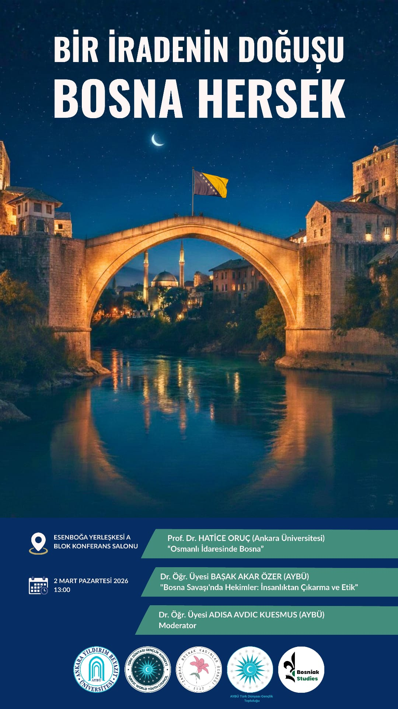
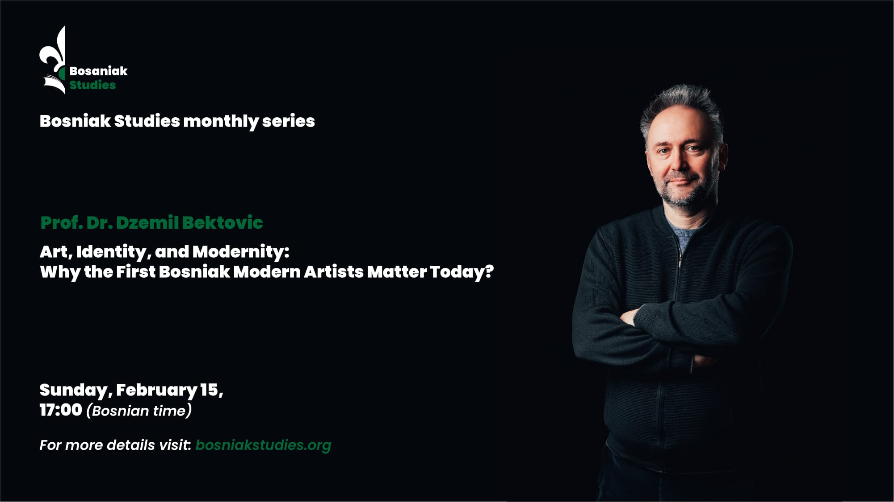
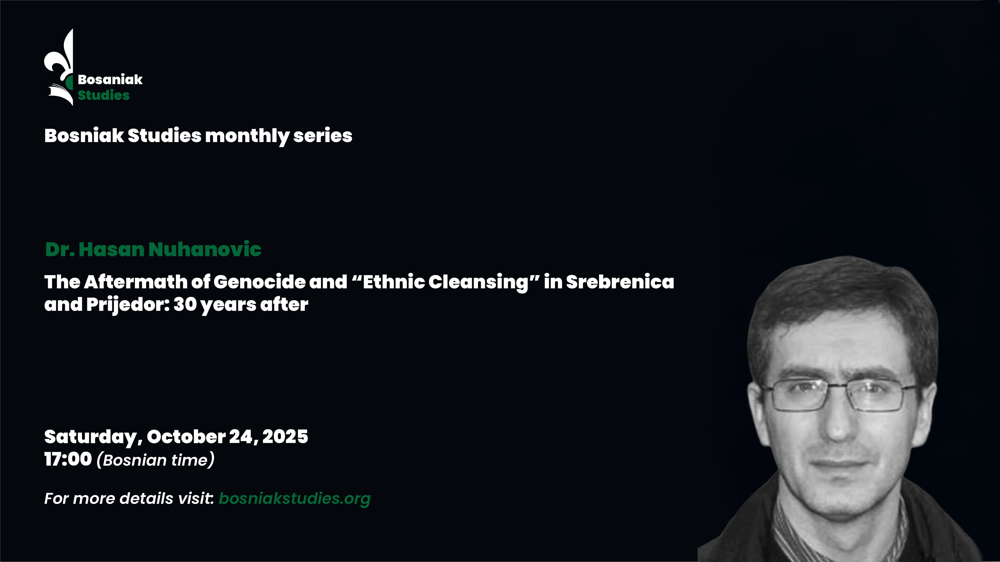
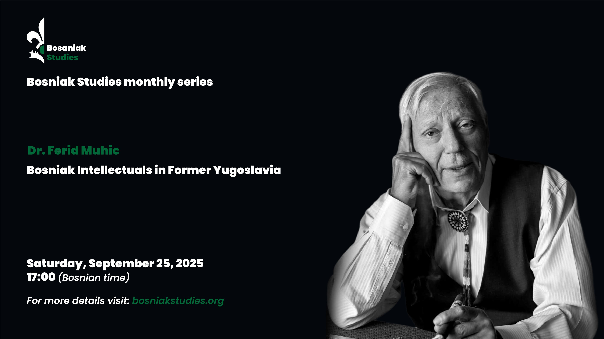
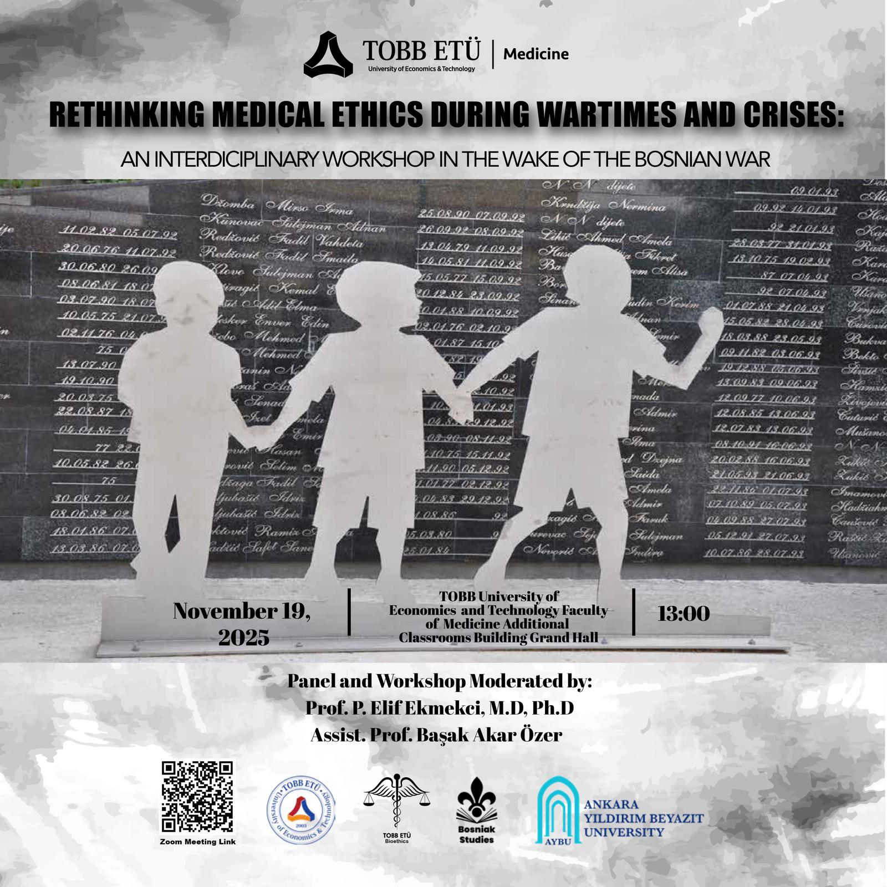
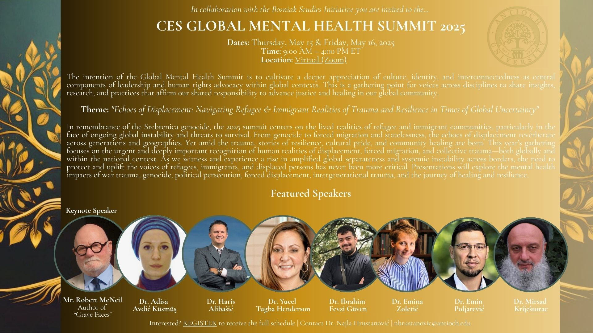

Georgio Konstandi - Anger and Regime of Feeling in the Ruins of Genocide
The Bosniak Studies monthly series highlights Georgio Konstandi's research on the emotional dimensions of Bosniak life in the post-genocide period.
Upcoming events and workshops related to Bosniak communities worldwide
Bosniak Studies organizes and participates in various academic events, workshops, and initiatives that explore the heritage, history, and contemporary issues affecting Bosniak communities.
The Bosniak Studies monthly series highlights Georgio Konstandi's research on the emotional dimensions of Bosniak life in the post-genocide period.

Deadline: Friday, May 1, 2026
The Bosniak Studies Association invites chapter proposals for the first ever Handbook of Bosniak Studies, a comprehensive academic volume under the theme "Bosniaks: Past, Present, and Future of a Southeastern European Nation."
This landmark publication aims to bring together scholars and researchers from a wide range of disciplines to introduce the Bosniak nation across time and space — from ancient history to contemporary diaspora communities worldwide.
Key Information:
Contributions are welcome across all related fields, including Bosniak history, geography of the Bosniak world, and Bosniak culture and identity.

Monday, March 2, 2026
At the initiative of the student organization Türk Dünyası Gençlik Topluluğu, Ankara Yıldırım Beyazıt University will host a roundtable discussion marking the 1st of March, Independence Day of Bosnia and Herzegovina, organized in cooperation with Bosniak Studies.
The event will examine the historical trajectory that led to Bosnia and Herzegovina's independence, situating it within the broader regional and international context of the early 1990s. In addition to its historical focus, the roundtable will introduce students in Ankara to key aspects of Bosniak history, cultural heritage, and intellectual traditions, contributing to academic dialogue and strengthening ties between our communities.
Event Details:

Sunday, February 15, 2026 at 17:00 (Bosnian Time)
Join us for our next monthly meeting featuring a special 25-minute presentation by Dr. Dzemil Bektovic on "Art, Identity, and Modernity: Why the First Bosniak Modern Artists Matter Today."
Dr. Dzemil is currently working on his book on this subject and is graciously giving us the first preview of it with his presentation.
Presentation Overview:
This presentation explains the visual expressions of Bosniak modern art as a site of epistemic negotiation between dominant narratives of modernism and hidden cultural identities. Rather than approaching Bosniak modern art as a peripheral reflection of Western modernist paradigms, the study conceptualizes it as a dynamic field of visual agency in which modernity is reconfigured through cultural memory, historical background, and aesthetic resistance.
Key Topics:
About the Speaker:
Dr. Dzemil Bektovic is a Professor of History, Philosophy and Theory of Art at International Balkan University in Skopje.
Event Details:

Saturday, October 24, 2025
Join us for a presentation by Dr. Hasan Nuhanovic on "The Aftermath of Genocide and 'Ethnic Cleansing' in Srebrenica and Prijedor: 30 Years After."
Event Details:

Saturday, September 25, 2025
Join us for a presentation by Dr. Ferid Muhic on "Bosniak Intellectuals in Former Yugoslavia."
Event Details:

This workshop brings together scholars, historians, and social scientists to explore the multifaceted impact of the Bosnian War, discussing historical perspectives, cultural consequences, and current academic research. The event aims to foster deeper understanding of the conflict's ongoing effects on communities, identity, and regional dynamics.
Focus Areas:

The CES Global Mental Health Summit 2025 focuses on innovative research, policy developments, and international collaborations addressing mental health issues in diverse communities, including post-conflict populations. This summit brings together mental health professionals, researchers, and policymakers to discuss emerging trends and solutions.
Key Topics:
Are you interested in participating in our events or organizing an activity? Contact us to learn more about upcoming opportunities.
Contact Us